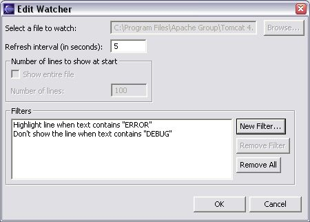

Editing a Watcher
Once a watcher has been created, certain attributes of the watcher may be edited.
- You may change how often the watcher checks for changes in the file it is watching. This option
is set in a number of seconds.
- You may add to or remove from the list of filters currently active for the watcher.
Defining a Filter for more information on filters.
